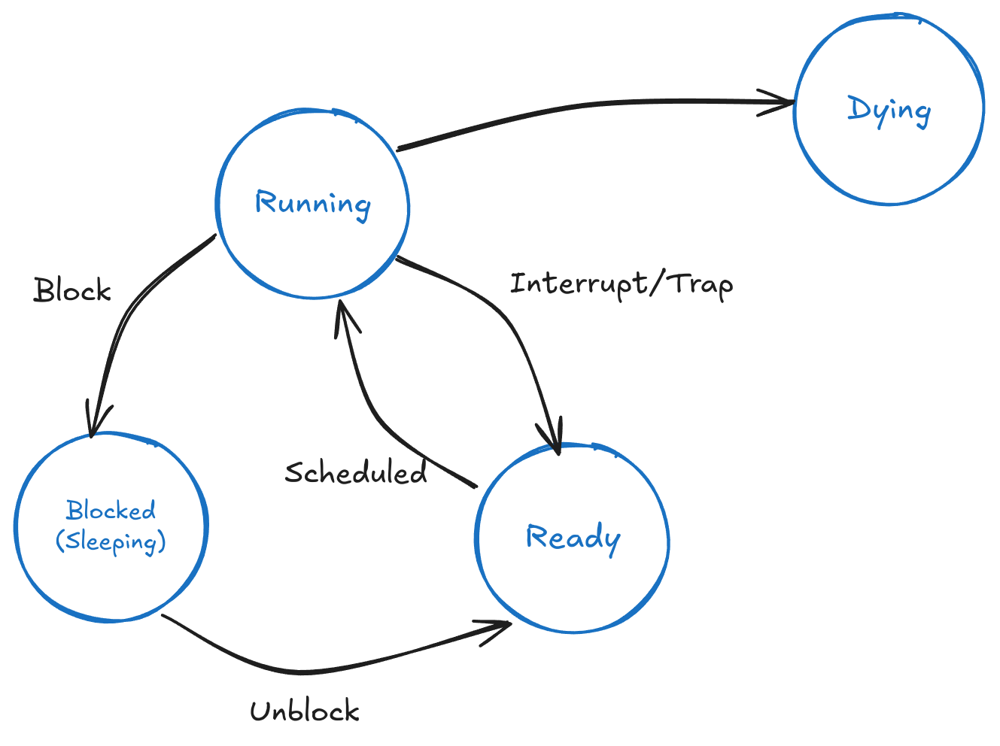

<div style="display: flex; justify-content: center; align-items: center; height: 700px;"> <div style="text-align: center; padding: 40px; background-color: white; border: 2px solid rgb(0, 63, 163); border-radius: 20px; box-shadow: 0 0 20px rgba(0,0,0,0.1);"> <h1 style="font-size: 48px; font-weight: bold; margin-bottom: 20px; color: #333;">CS130 Operating System Tutorial</h1> <p style="font-size: 24px; color: #666;">Intro to Project 1</p> <p style="font-size: 16px; color: #999; margin-top: 20px;">Hengyu Ai | 2024-10-16</p> </div> </div> <!--s--> <div class="middle center"> <div style="width: 100%"> # Part.0 Reminder </div> </div> <!--v--> ## Projects - All four projects are released - Course homepage: [https://lion.sist.shanghaitech.edu.cn/Course/CS130/24f/](https://lion.sist.shanghaitech.edu.cn/Course/CS130/24f/) - Start early, the latter projects are more challenging - Weekly commit - Always remember to read the project document <br/> - Project 1 Deadline: Nov. 2 at 23:59 - Merge to `main` branch of your group repository - Remember to attend code review <!--s--> <div class="middle center"> <div style="width: 100%"> # Part.1 Overview of PintOS </div> </div> <!--v--> ## PintOS - Single-core, 32-bit x86 architecture - Unix-like OS - Let the threads run concurrently $\Rightarrow$ Scheduling, Context Switching </br> - C standard library is not available (but some are re-implemented in `src/lib`) - No floating-point arithmetic </br> RTFM: everything you need is in the project document [https://web.stanford.edu/class/cs140/projects/pintos/pintos_1.html](https://web.stanford.edu/class/cs140/projects/pintos/pintos_1.html) <!--v--> ## Source Code - All the source code is under `src` directory - `src/threads`: project 1, thread management, scheduling, synchronization - `src/userprog`: project 2, user program execution - `src/vm`: project 3, virtual memory - `src/filesys`: project 4, file system <!--v--> ## Source Code ``` ├── src │ ├── devices (disk, keyboard, ...) │ ├── examples (example functions) │ ├── lib (helper functions) │ ├── threads (project 1) │ │ ├── init.c <-- 3rd executes (main) │ │ ├── interrupt.c │ │ ├── intr-stubs.S │ │ ├── io.h │ │ ├── kernel.lds.S │ │ ├── loader.S <-- 1st executes │ │ ├── malloc.c │ │ ├── palloc.c │ │ ├── pte.h │ │ ├── start.S <-- 2nd exectues │ │ ├── switch.S │ │ ├── synch.c │ │ ├── thread.c │ │ └── vaddr.h ``` <!--v--> ## Booting Process - OS is also a software <!-- .element: class="fragment" --> - There must be an entry point <!-- .element: class="fragment" --> <li class="fragment">Do we still have <code>main</code> function like other C programs?</li> <div class="fragment"> 1. `src/threads/loader.S`: the 512-byte boot sector (x86 assembly), loaded by the BIOS 2. `src/threads/start.S`: the 4KB bootloader (x86 assembly), loaded by the boot sector 3. `src/threads/init.c`: the first C function, called by the bootloader, `main` function is here 4. `thread_init()`, `console_init()`... 5. `run_actions(argv)` 6. `shutdown()`, `thread_exit()` </div> <!--v--> ## Average Programs and OS - OS can execute privileged instructions - all tests in project 1 are executed in kernel mode - user mode will be implemented in project 2 - OS has full control of memory - OS interacts with hardware <!--v--> ## Concurrency in PintOS - many tasks are running "at the same time" <!-- .element: class="fragment" --> - but there is only one core <!-- .element: class="fragment" --> - wait for other tasks to finish $\Rightarrow$ not concurrent <!-- .element: class="fragment" --> - OS must have the ability to switch between tasks <!-- .element: class="fragment" --> </br> **timer interrupt** <!-- .element: class="fragment" --> <!--v--> ## Interrupt Interrupts are signals from devices (e.g. keyboard, timer) to the CPU, which cause the CPU to stop its current task immediately and start executing a new task. - Every $t$ milliseconds, the timer sends an interrupt to the CPU <!-- .element: class="fragment" --> - When a device receives data, it sends an interrupt to the CPU <!-- .element: class="fragment" --> - ... <!-- .element: class="fragment" --> <span> CPU has a "table" to look up the corresponding function to handle the interrupt. For timer interrupt, it's `timer_interrupt()` in `src/threads/timer.c`. </span> <!-- .element: class="fragment" --> <div class="fragment"> Suppose we have a time slice of 5ms, and 3 tasks A, B, C: - there are 3 tasks: A, B, C, A is running - after 5ms, timer interrupt, A is paused, CPU selects B to run - after 5ms, timer interrupt, B is paused, CPU selects C to run - ... </div> <!--v--> ## Problems from Concurrency Since we are frequently switching between tasks... - the order of tasks is not determined <!-- .element: class="fragment" --> - what should I do if I want something to be done atomically? <!-- .element: class="fragment" --> - Just don't let timer interrupt you <!-- .element: class="fragment" --> <div class="fragment"> ```c void task (void) { enum intr_level old_level; old_level = intr_disable (); // do something // you will not be interrupted by timer interrupt intr_set_level (old_level); } ``` </div> <!--v--> ## Scheduling <p></p> <!--s--> <div class="middle center"> <div style="width: 100%"> # Part.2 Project 1 Tasks </div> </div> <!--v--> ## Task Goal - Let you understand how OS make tasks run concurrently - Basic ideas about synchronization <!--v--> ## Task Grading - multiple test cases - run `make check` under `src/threads` directory - `make check` will run all the test cases - run a single test case: https://pastebin.com/Nd0zPQxJ </br> You can find all test cases in `src/tests/threads` directory. <!--v--> ## Task 1: Alarm Clock ```c /* Sleeps for approximately TICKS timer ticks. Interrupts must be turned on. */ void timer_sleep (int64_t ticks) { int64_t start = timer_ticks (); ASSERT (intr_get_level () == INTR_ON); while (timer_elapsed (start) < ticks) thread_yield (); } ``` - busy waiting <!-- .element: class="fragment" --> - imagine you are taking a nap, but you must get up for a class at 13:00 <!-- .element: class="fragment" --> - wake up $\rightarrow$ not yet $\rightarrow$ sleep $\rightarrow$ wake up $\rightarrow$ ... <!-- .element: class="fragment" --> - how I wish someone could wake me up at 13:00 <!-- .element: class="fragment" --> <!--v--> ## Task 2: Priority Donation Implementing a priority-based **preemptive** scheduler - When a thread with higher priority than currently running thread is ready, the current thread should immediately yield the processor to the new thread. - When threads are waiting for a lock, semaphore, or condition variable, the highest priority waiting thread should be awakened first. - A thread may raise or lower its own priority at any time, but lowering its priority such that it no longer has the highest priority must cause it to immediately yield the CPU. - Avoid priority inversion by implementing nested priority donation. <!--v--> ## Task 2: Priority Donation Priority Inversion: - Threads : H (high), M (medium), L (low) - L holds a lock, H is waiting for the lock, M is ready to run - H should be running, but only L and M is ready - L can't preempt M, so M runs first - M finishes before L, which is not expected </br> - `src/threads/thread(.c/.h)`: `thread_yield()`, `thread_set_priority()` - `src/threads/synch(.c/.h)`: lock, semaphore, condition variable <!--v--> ## Task 3: Advanced Scheduler Implement a multi-level feedback queue scheduler like 4.4BSD - global variables `thread_mlfqs` represents whether to use MLFQS - priority calculation involves fraction numbers, but we don't have floating-point arithmetic - no priority donation The rule of priority is quite complex, so **RTFM**. <!--v--> ## Task 4: Design Document - Template at `doc/threads.tmpl` - Answer the questions in the template - If you are not sure about how to finish the previous tasks, maybe design document can give you some inspiration </br> **Remember to submit the design document via Gradescope** **Add your team members in the submission page** <!--v--> ## Misc Problems When you run `make check` for a project... ```bash perl: warning: Setting locale failed. perl: warning: Please check that your locale settings: LANGUAGE = (unset), LC_ALL = (unset), LANG = "en_US.UTF-8" are supported and installed on your system. perl: warning: Falling back to the standard locale ("C"). ``` It's just a warning about system locale settings, nothing to do with project grading. add `export LC_ALL=C` at the end of `~/.bashrc` <!--s--> <div style="display: flex; justify-content: center; align-items: center; height: 700px; "> <div style="text-align: center; padding: 40px; background-color: white; border-radius: 20px; box-shadow: 0 0 20px rgba(0,0,0,0.1);"> <div style="display: inline-block; padding: 20px 40px; border-radius: 10 px; margin-bottom: 20px;"> <h1 style="font-size: 48px; font-weight: bold; margin: 0; color: rgb(16, 33, 89)">Thanks for Listening</h1> </div> <p style="font-size: 24px; color: #666; margin: 0;">Any questions?</p> </div> </div>